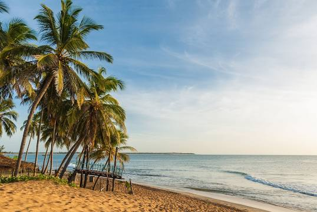
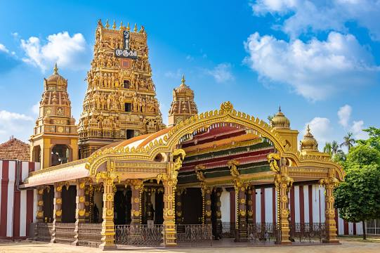

Galle Face is a 5 ha ocean-side urban park, which stretches for 500 m along the coast, in the heart of Colombo, the financial and business capital of Sri Lanka. The promenade was initially laid out in 1859 by Governor Sir Henry George Ward, although the original Galle Face Green extended over a much larger area than is seen today. The Galle Face Green was initially used for horse racing and as a golf course, but was also used for cricket, polo, football, tennis and rugby.
GANGARAMAYA TEMPLE
Gangaramaya Temple is one of the most important temples in Colombo, Sri Lanka, being a mix of modern architecture and cultural essence. Located on the Beira Lake, it was completed in the late 19th century.
SOURTHERN PROVINCE
GALLE FORT
Galle Fort, in the Bay of Galle on the southwest coast of Sri Lanka, was built first in 1588 by the Portuguese, then extensively fortified by the Dutch during the 17th century from 1649 onwards. It is a historical, archaeological and architectural heritage monument, which even after more than 432 years maintains a polished appearance, due to extensive reconstruction work done by Archaeological Department of Sri Lanka. The fort has a colourful history, and today has a multi-ethnic and multi-religious population. The Sri Lankan government and many Dutch people who still own some of the properties inside the fort are looking at making this one of the modern wonders of the world. The heritage value of the fort has been recognized by the UNESCO and the site has been inscribed as a cultural heritage UNESCO World Heritage Site under criteria iv, for its unique exposition of "an urban ensemble which illustrates the interaction of European architecture and South Asian traditions from the 16th to the 19th centuries." The Galle Fort, also known as the Dutch Fort or the "Ramparts of Galle", withstood the Boxing Day tsunami which damaged part of coastal area Galle town.
SINHARAJA FOREST
Sinharaja Forest Reserve is a forest reserve and a biodiversity hotspot in Sri Lanka. It is of international significance and has been designated a Biosphere Reserve and World Heritage Site by UNESCO.
UVA PROVINCE
THE NINE ARCH BRIDGE
The Nine Arch Bridge, also known as the ‘Bridge in the Sky’ was constructed by connecting two bog mountains when constructing the Badulla – Colombo railway. This bridge is 300 feet in length, 25 feet in width and 80-100 feet in height. It is one of the best examples of colonial-era railway construction in the country. The Bridge can be reached by travelling 2km on Gotuwala road starting from Halpe Textile centre in Badulla Bandarawela road. The surrounding area has seen a steady increase in tourism due to the bridge’s architectural ingenuity and the profuse greenery in the nearby hillsides.
DIYALUMA FALLS
Diyaluma Falls is 220 m high and the second highest waterfall in Sri Lanka and 361st highest waterfall in the world. It is situated 6 km away from Koslanda in Badulla District on Colombo-Badulla highway. The Falls are formed by Punagala Oya, a tributary of Kuda Oya which in turn, is a tributary of Kirindi Oya.
SABARAGAMUWA PROVINCE
SRI PADA / ADAM'S PEAK
Adam's Peak is a 2,243 m tall conical mountain located in central Sri Lanka. It is well known for the Sri Pada, i.e., "sacred footprint", a 1.8 m rock formation near the summit, which in Buddhist tradition is held to be the footprint of the Buddha, in Hindu tradition that of Hanuman or Shiva, i.e., "Mountain of Shiva's Light", and in some Islamic and Christian traditions that of Adam, or that of St. Thomas.
ELEPHANT ORPHANAGE
Pinnawala Elephant Orphanage, is an orphanage, nursery and captive breeding ground for wild Asian elephants located at Pinnawala village, 13 km northeast of Kegalle town in Sabaragamuwa Province of Sri Lanka. Pinnawala has the largest herd of captive elephants in the world. In 2011, there were 96 elephants, including 43 males and 68 females from 3 generations, living in Pinnawala. The orphanage was founded to care and protect the many orphaned unweaned wild elephants found wandering in and near the forests of Sri Lanka. It was established in 1975 by the Sri Lanka Department of Wildlife Conservation. On 31 August 2021, a 25 year old elephant named Surangi gave birth to twin male baby elephants at the orphanage. It also marked the first instance of the birth of twin elephants in Sri Lanka after a gap of 80 years since 1941
CENTRAL PROVINCE
TEMPLE OF THE SACRED TOOTH RELIC
Temple of the Sacred Tooth Relic or Sri Dalada Maligawa; commonly known as the ශ්රී දළදා මාළිගාව, is a Buddhist temple in Kandy, Sri Lanka. It is located in the royal palace complex of the former Kingdom of Kandy, which houses the relic of the tooth of the Buddha. Since ancient times, the relic has played an important role in local politics because it is believed that whoever holds the relic holds the governance of the country. The relic was historically held by Sinhalese kings. The temple of the tooth is a World Heritage Site mainly due to the temple and the relic. Bhikkhus of the two particular chapters, the Malwathu chapters and Asgiri chapters conduct daily worship in the inner chamber of the temple. Rituals are performed three times daily: at dawn, at noon, and in the evenings. On Wednesdays, there is a symbolic bathing of the relic with a herbal preparation made from scented water and fragrant flowers called Nanumura Mangallaya; this holy water is believed to contain healing powers and is distributed to those present. The temple sustained damage from bombings by Janatha Vimukthi Peramuna in 1989, and by Liberation Tigers of Tamil Eelam in 1998.
LAKE GREGORY
Lake Gregory, sometimes also called Gregory Lake or Gregory Reservoir, is a reservoir in heart of the tea country hill city, Nuwara Eliya, Sri Lanka. Lake Gregory was constructed during the period of British Governor Sir William Gregory in 1873. The lake and the surrounding area make up the Gregory Lake Area.
NORTH WESTERN PROVINCE
RIDI VIHARAYA
Ridi Viharaya or Silver Temple is a 2nd-century BCE Theravada Buddhist temple in the village of Ridigama, Sri Lanka. Built during the reign of Dutthagamani of Anuradhapura, the temple is considered as the place where the silver ore, which provided silver to complete Ruwanwelisaya; one of the largest stupa in Sri Lanka, was discovered. According to the chronicles Mahavamsa and Thupavamsa, the Ridi Viharaya complex was built in gratitude for helping him cherish his dream of completing Ruwanwelisaya.
BATHTHALANGUNDUWA
Baththalangunduwa is an island lies in the Dutch Bay (Portugal Bay). A thin strip of an island about a mere five square kilometers in size, is located around 38 kilometers away from the town of Kalpitiya. The journey to Baththalangunduwa begins in Kalpitiya, where travellers will find the ferry that takes passengers to the island everyday except on Sundays. Boats operating from Kalpitiya are the only ones allowed to make the trip to this island. It takes 3 hours to reach Baththalangunduwa Island.The boats will operating Monday to Saturday by 8.30am. Parking available inside the park of fishery harbor.
Its an ideal destination for beach Camping ! The pure beauty of this island is unique with the culture and fishery traditions. The hospitality of people who are living in Baththalangunduwa will make your journey more beautiful and memorable.
EASTERN PROVINCE
ARUGAM BAY BEACH

Arugam Bay, known locally as "Arugam Kudah", is situated on the Indian Ocean in the dry zone of Sri Lanka's southeast coast, and a historic settlement of the ancient Batticaloa Territory. The bay is located 117 kilometres south of Batticaloa, 320 kilometres due east of Colombo, and approximately 4 kilometres south of the market town of Pottuvil. The main settlement in the area, known locally as Ullae, is predominantly Muslim, however there is a significant Sri Lankan Tamil and Sinhala population to the south of the village, as well as a number of international expatriates, largely from Europe and Australia. While traditionally fishing has dominated the local economy, tourism has grown rapidly in the area in recent years. Arugam Kudah's literal Tamil translation is "Bay of Cynodon dactylon". Tourism in Arugam Bay is dominated by surf tourism, thanks to several quality breaks in the area, however tourists are also attracted by the local beaches, lagoons, historic temples and the nearby Kumana National Park.
LAHUGALA KITULANA NATIONAL PARK
Lahugala Kitulana National Park is one of the smallest national parks in Sri Lanka. Despite its land area, the park is an important habitat for Sri Lankan elephant and endemic birds of Sri Lanka. The national park contains the reservoirs of Lahugala, Kitulana and Sengamuwa and they are ultimately empties to Heda Oya river. Originally it was designated as a wildlife sanctuary on July 1 of 1966. Then the protected area was upgraded to a national park on October 31 of 1980. Lahugala Kitulana is situated 318 km east of Colombo.
NORTH CENTRAL PROVINCE
ANURADAPURA
Anuradhapura is a major city in Sri Lanka. It is the capital city of North Central Province, Sri Lanka and the capital of Anuradhapura District. Anuradhapura is one of the ancient capitals of Sri Lanka, famous for its well-preserved ruins of an ancient Sinhala civilization.
SIGIRIYA
Sigiriya or Sinhagiri is an ancient rock fortress located in the northern Matale District near the town of Dambulla in the Central Province, Sri Lanka. It is a site of historical and archaeological significance that is dominated by a massive column of rock approximately 180 metres high. According to the ancient Sri Lankan chronicle the Culavamsa, this area was a large forest, then after storms and landslides it became a hill and was selected by King Kashyapa for his new capital. He built his palace on top of this rock and decorated its sides with colourful frescoes. On a small plateau about halfway up the side of this rock he built a gateway in the form of an enormous lion. The name of this place is derived from this structure — Sīnhāgiri, the Lion Rock. The capital and the royal palace were abandoned after the king's death. It was used as a Buddhist monastery until the 14th century. Sigiriya today is a UNESCO listed World Heritage Site. It is one of the best preserved examples of ancient urban planning.
NORTHERN PROVINCE
NALLUR KANDASWAMY KOVIL

Nallur Kandaswamy Kovil is a significant Hindu temple, located in Nallur, Northern Province, Sri Lanka. The presiding deity is Lord Murugan in the form of the holy 'Vel' in the Sanctum, the primary shrine, and in other forms, namely, Shanmugar, Muthukumaraswami, Valli Kaanthar with consorts Valli and Deivayanai, and Thandayuthapani, sans consorts in secondary shrines in the temple.
NAGADEEPA PURANA RAJA MAHA VIHARAYA
Nagadeepa Purana Vihara is an ancient Buddhist temple situated in Jaffna district of Northern Province, Sri Lanka. It is among the country's sixteen holiest Buddhist shrines. According to contemporary history, the Gautama Buddha visited the site after five years of attaining Enlightenment to settle the dispute between two warring Naga kings, Chulodara and Mahodara. Ancient history according to the Mahavamsa chronicles and the Tamil Buddhist epic Manimekalai mentions a gem-studded throne and a stone with the Buddha’s footprint at the island Nainativu, which pilgrims from India visited.